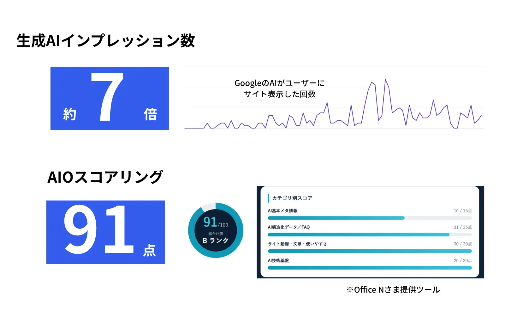

この記事でわかること
- AIO・LLMO・GEO・AEO・SEOの違いを一枚の表で整理
- AIOが「機能名」と「最適化」の2つの意味で使われる理由
- GEO・LLMO・AEOの出どころと、公式の定義があるかどうか
- Googleが示す公式見解と、用語が違っても重なる作業、測る指標（KPI）の違い
- 提案書・見積書で用語が出たときの5つの確認質問
結論：5つの用語は「何を良くするか」が違う
結論から言うと、AIO・LLMO・GEO・AEOは、ほとんどの場面で「生成AIの回答に自社が出てくる状態をつくる」という同じ方向の取り組みを、別の言葉で呼んだものです。SEOは、検索結果での表示や順位を良くする取り組みで、AI検索対策はその延長にあるというのがGoogleの立場です。
ただし、言葉ごとに「出どころ」と「指している範囲」には違いがあります。まず全体像を一枚の表にまとめます。
| 用語 | 元の言葉 | 主に指すもの | 出どころ・性格 |
|---|---|---|---|
| AIO | AI Overviews／AI Optimization | 文脈で2通り。GoogleのAI概要という機能、またはAI向け最適化 | 機能名としては公式。最適化の意味は業界の略称 |
| LLMO | Large Language Model Optimization | ChatGPTなどの回答で、自社が言及・引用されること | 国内で広まった呼び方。公式の定義はない |
| GEO | Generative Engine Optimization | 生成AIの回答内での、情報の見えやすさ | 学術論文に由来する用語 |
| AEO | Answer Engine Optimization | 質問への回答として選ばれること | GEOやLLMOを含む広い言葉として使う会社もある |
| SEO | Search Engine Optimization | 検索結果での表示・順位 | 従来からある取り組み。Googleは生成AI検索向けもSEOの範囲と説明 |
※ 上の表は一般的な使われ方の整理です。定義は会社ごとに異なります（2026年10月5日確認）。
ここから先は、表の中でも混乱の元になりやすい「AIO」から順に、出どころを確認していきます。
AIOが2つの意味で使われる問題
用語の混乱でいちばん大きいのが、AIOという言葉が2つの意味で使われていることです。
- 意味①：AI Overviews（AIによる概要）：Google検索の上部にAIが生成する回答が出る機能そのものの名前です。Googleの公式ドキュメントでも、AI OverviewsはAIモードと並べて説明されています（出典：AI features and your website｜Google 検索セントラル）。
- 意味②：AI Optimization：生成AIに引用されるための最適化の略称として、支援会社が使う言い方です。「AIO対策」と書かれていれば、多くはこちらの意味です。
ITmediaの解説も、AIO（AI Overview）はGoogleが検索結果の上部に生成AIの回答を出す機能であり、それを含む生成AIに引用されるための最適化がLLMOだ、と整理しています（出典：生成AI時代のSEO「LLMO」企業は“AIに選ばれるため”に、今何ができるか｜ITmedia ビジネスオンライン）。
つまり「AIOとLLMOの違い」は、片方が機能名、片方が取り組みの名前になっている場合、そもそも比べる対象が違う、という見方ができます。一方で、「AIO対策」を最適化の意味で使う会社の場合は、LLMO対策とほぼ同じ内容を指します。見積書や提案書でAIOという語を見たら、機能名か最適化かを最初に確認するのがおすすめです。
見分け方の目安：「AIOに掲載される」「AIOに引用される」と書かれていれば機能名、「AIO対策を行う」「AIOを実施する」と書かれていれば最適化の意味で使われていることが多いです。（当社が提案書や記事を読んできた経験にもとづく目安で、例外もあります。）
LLMO・GEO・AEOの出どころ
GEO：学術論文から出た言葉
GEOは、2023年にプリンストン大学などの研究者が発表した論文で提案された言葉です。論文では、生成AIを使った検索で情報の見えやすさを高めるための枠組みをGEOと呼んでいます。KDD 2024に採択されており、手法によっては生成AIの回答内での可視性を最大40％高められたと報告されていますが、効果は分野によって大きく異なると、同じ論文が述べています（出典：GEO: Generative Engine Optimization｜arXiv）。
注意したいのは、この40％は論文の実験条件での結果であり、実務で同じ数字が出ることを意味しない点です。GEOという言葉を掲げる会社の提案で「◯％向上」という数字が出てきたら、何を何と比べた数字なのかを確認してください。
LLMO：国内で広まった呼び方
LLMOは、大規模言語モデルへの最適化という意味で、国内を中心に広まった呼び方です。ITmediaの解説では、LLMOはGoogleが公式に定めた用語ではなく、GEOなどの言葉にも明確な定義はない、と指摘されています（出典：同記事｜ITmedia ビジネスオンライン）。
公式の定義がないということは、会社ごとにLLMOの範囲が違っていてもおかしくないということです。ある会社は計測レポートだけをLLMO対策と呼び、別の会社は記事の改善と構造化データの実装までを含めて呼びます。
AEO：回答エンジン向けの、より広い言葉
AEOは、質問への回答として選ばれることを目指す言葉です。Googleの公式ドキュメントでも、AEOやGEOという呼び方があることに触れられています。会社によっては、GEOやLLMOを含む上位の概念として使っています。
Googleは「どれもSEO」と言っている
ここまでの用語の違いを踏まえたうえで、実務で最も重要な前提を確認します。Google検索セントラルは、生成AI検索向けの最適化に関するガイドで、Google検索の観点では、生成AI検索向けの最適化は検索体験への最適化であり、つまりSEOだと説明しています。また、AEOやGEOを名乗るサービスを検討するときは、サードパーティのSEOアドバイスを評価するためのGoogleのガイダンスを確認するよう案内しています（出典：Optimizing your website for generative AI features on Google Search｜Google 検索セントラル）。
同じガイドでは、Google検索に表示されるために、新しい機械可読ファイルやAI用のテキストファイル、特別なマークアップは不要とも説明されています。つまり、用語が増えても、Google検索に関しては「やること」が増えるわけではないというのが公式の立場です。
一方で、ChatGPTやPerplexityなどGoogle以外の生成AIについては、この公式ガイドの対象外です。そのため、「Googleの外も含めて、何を測り何を直すか」を決めるときに、用語の整理が役に立ちます。
用語が違うと、やる作業は変わるのか
結論は、作業の大半は共通で、違いが出るのは「測り方」と、会社が追加で売るメニューです。次の表は、当社が自社のオウンドメディアを運用してきた経験にもとづく整理です。
| 作業 | 従来のSEO | AI検索対策（AIO・LLMO・GEO） | 共通か |
|---|---|---|---|
| 検索意図に沿った内容・網羅性 | 必須 | 必須（質問に答える内容が引用の土台） | 共通 |
| インデックス・クロールの確認 | 必須 | Googleは表示の前提として同じ条件を示している | 共通 |
| 見出しの直下に結論を書く | 推奨 | 特に重要（質問と答えの対応が読み取りやすい） | 共通（比重が違う） |
| 一次情報・実測値の掲載 | 推奨 | 特に重要（他所にない情報が参照されやすいと当社は考えている） | 共通 |
| 順位・クリックの計測 | 必須 | それだけでは足りない | SEOの作業 |
| 質問リストでの引用・言及の確認 | 通常は行わない | 必須（AIの回答は検索のたびに変わり得るため、定点観測が要る） | AI検索対策に固有 |
| llms.txtなどAI向けファイル | — | Googleは不要と説明。他のAIでの効果は公式には示されていない | 補助的な施策 |
※ 比重の評価は、当社の自社メディア運用での実務感覚にもとづく目安です。サイトの状態や業種によって変わります。
この表から分かるとおり、用語ごとに別々の作業があるわけではありません。だからこそ、「LLMO対策」「GEO対策」と名前が付いたメニューを見たら、中身が上の表のどの行にあたるのかを分解して考えると、比較しやすくなります。
測る指標（KPI）はどう違うか
作業が重なっていても、「成果をどこで、何で測るか」は取り組みごとに違います。ここを曖昧にすると、レポートを受け取っても良いのか悪いのか判断できなくなります。
| 取り組み | 主な対象 | 見る指標 | 測る場所 |
|---|---|---|---|
| SEO | 検索結果（Google・Bingなど） | 表示回数・クリック数・クリック率・掲載順位 | Search Console |
| AIO（Google AI概要への表示） | Google検索のAI概要・AIモード | 参照元リンクとして出たか、狙うクエリの表示回数・クリックの推移 | Search Console（通常検索と同じ「ウェブ」に含まれる）＋質問リストでの目視確認 |
| LLMO・GEO（ChatGPTなどの回答） | ChatGPT・Gemini・Perplexityなどの生成AI | 言及の有無、引用元URL、競合と比べた出現の割合 | 質問リストでの定点観測、計測ツール、流入元の確認（GA4） |
| 共通のゴール | — | 問い合わせ・商談・売上 | GA4、フォーム、CRM |
※ 指標と測る場所は、公式の説明と当社の自社メディア運用での整理です。ツールや時期によって取得できる数値は変わります。
AI概要については、Googleの説明では、AI機能経由のトラフィックはSearch Consoleで通常の検索と同じ「ウェブ」の検索タイプに含まれます。今回確認した公式ページには、AI概要だけを切り出す方法は示されていません（出典：AI features and your website｜Google 検索セントラル）。そのため、狙うクエリの推移と、質問リストでの引用の有無を併せて記録します。
生成AI側で気をつけたいのが、「言及」と「引用」は別の指標だという点です。言及は回答の文章に社名やサービス名が出ること、引用は回答の根拠として自社ページのURLが示されることを指します。会社によってはこの2つを混ぜて報告するため、レポートでどちらを数えているのかを確認してください。ChatGPTからの流入の見方はChatGPT SEO対策｜表示・引用される7つの施策で、指標の組み方はAIO対策の効果測定｜5指標とレポート雛形の作り方で整理しています。
SEO・AIO対策／オウンドメディア運用代行
提案書・見積書で用語が出てきたら確認する5つの質問
用語の違いを知っても、実際に迷うのは見積もりを比べる場面です。次の5点を確認すれば、名前の違いに引きずられずに比較できます。
発注前に会社へ確認する5つの質問
- この提案書の「AIO」は、Googleの機能名ですか、それとも最適化の意味ですか
- 対象にするAIはどれですか（Google AI Overviews・AIモード・ChatGPT・Perplexity・Geminiなど）
- 作業範囲は、計測・レポートまでですか。記事やページの修正まで含みますか
- 成果はどの指標で測りますか（引用された回数、言及の有無、流入、問い合わせなど）
- 「必ず表示される」「◯％向上する」といった保証や数字の根拠は何ですか
特に最後の質問は重要です。Googleは生成AI検索向けの特別な最適化は不要としており、AIの回答への掲載を保証する方法はありません。保証をうたう提案は、根拠を必ず確認してください。会社を比較する際の見方はAIO対策会社おすすめ6選｜費用・支援範囲を比較で、実在する会社の公開情報をもとに整理しています。
社内ではどの言葉に統一するか
最後に、社内の呼び方の決め方です。おすすめは次の2段構えです。
- 社内の資料や会議では「AI検索対策」と書く：特定の用語に寄らないため、AIO・LLMO・GEOのどれを使う会社と話しても通じます。
- 外部と話すときは、用語を括弧書きで併記する：「AI検索対策（LLMO）」のように書き、相手の用語との対応を毎回確認します。
言葉の統一よりも、「何を測り、何を直すか」を決めるほうが成果に直結します。測り方はAIO対策の効果測定｜5指標とレポート雛形の作り方、具体的なやり方はAIO対策のやり方｜SEOとの違いと進め方にまとめています。
LnXの見解
用語の違いは、知っておくと提案書の読み違いを防げますが、成果を左右するのは言葉ではなく「質問に答える内容を、根拠付きで、継続的に出し続けられているか」だと当社は考えています。AIO・LLMO・GEOのどれを掲げても、Googleの公式の立場では、基礎のSEOを丁寧に積むことが出発点になります。
当社は自社のオウンドメディアで、特定の用語に合わせた専用の作業を足すのではなく、記事の構成・構造化データ・FAQ・表記の整合といった共通の土台を同じ制作フローで満たしてきました。その結果、生成AIインプレッションは約7倍、AIOスコアは91点になっています。

この数値は自社メディアでの結果であり、他のサイトで同じ結果を保証するものではありません。用語ごとに何をすべきか迷われている場合は、まず現状の無料診断からご相談ください。診断のみのご利用も歓迎しています。
よくある質問
Q AIOとLLMOは、結局同じ意味ですか？
作業の大半は重なりますが、言葉が指す対象は同じではありません。AIOは文脈によってGoogleのAI Overviews（機能名）を指す場合と、AI向け最適化を指す場合があり、LLMOは主にChatGPTなど大規模言語モデルの回答での言及・引用を指します。提案書で使われている場合は、どの作業を指すのかを確認してください。
Q GEOとLLMOはどちらを使えばよいですか？
どちらの語も広く検索されており、社内の呼び方はどちらでも構いません。当社は、社内の資料では「AI検索対策」と書き、用語は括弧書きで併記する運用をおすすめしています。大切なのは言葉の統一よりも、何を測り何を直すのかをはっきりさせることです。
Q AEOはAIOやLLMOと何が違いますか？
AEOはAnswer Engine Optimizationの略で、質問への回答として選ばれることを指す言葉です。Googleは公式ドキュメントでAEOやGEOに触れたうえで、Google検索の観点では生成AI検索向けの最適化も引き続きSEOだと説明しています。会社によっては、GEOやLLMOを包む広い言葉として使っています。
Q SEOをやっていれば、AIO・LLMOの対策は不要ですか？
不要とまでは言えません。Googleは生成AI検索向けの最適化もSEOと同じ考え方だとしていますが、AIの回答に自社が出ているかを測る作業は、従来の順位計測だけでは足りません。基礎のSEOを前提に、質問リストでの引用・言及の確認を足すのが現実的です。
Q 用語の違いを知らないと、会社選びで損をしますか？
損をする場面はあります。同じ「LLMO対策」という名前でも、レポートだけの会社と記事の改善まで行う会社があり、見積もりの比較が成り立たないことがあるためです。作業範囲・成果物・測り方の3点を確認すれば、用語の違いに振り回されずに比較できます。
Q AIOとGEOでは、見る指標（KPI）が違いますか？
対象とする場所が違うため、見る場所は変わります。Google AI概要への表示はSearch Consoleでの表示回数・クリックの推移と質問リストでの確認、ChatGPTなど生成AIは言及の有無・引用元URL・競合との差を質問リストや計測ツールで見ます。最終的なゴールは、どちらも問い合わせや売上です。
Q llms.txtは、どの用語の対策でも必要ですか？
Googleは、Google検索に表示されるために新しい機械可読ファイルやAI用テキストファイルは不要だと説明しています。他の生成AIサービスでの効果は、当社が確認した公式情報の範囲では保証されていません。必須の施策ではなく、補助として入れるかどうかの判断になります。